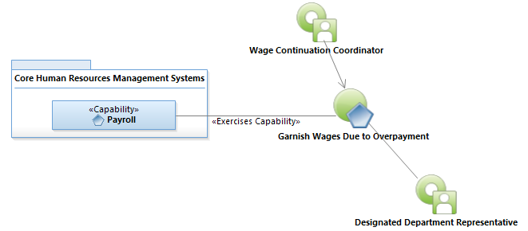
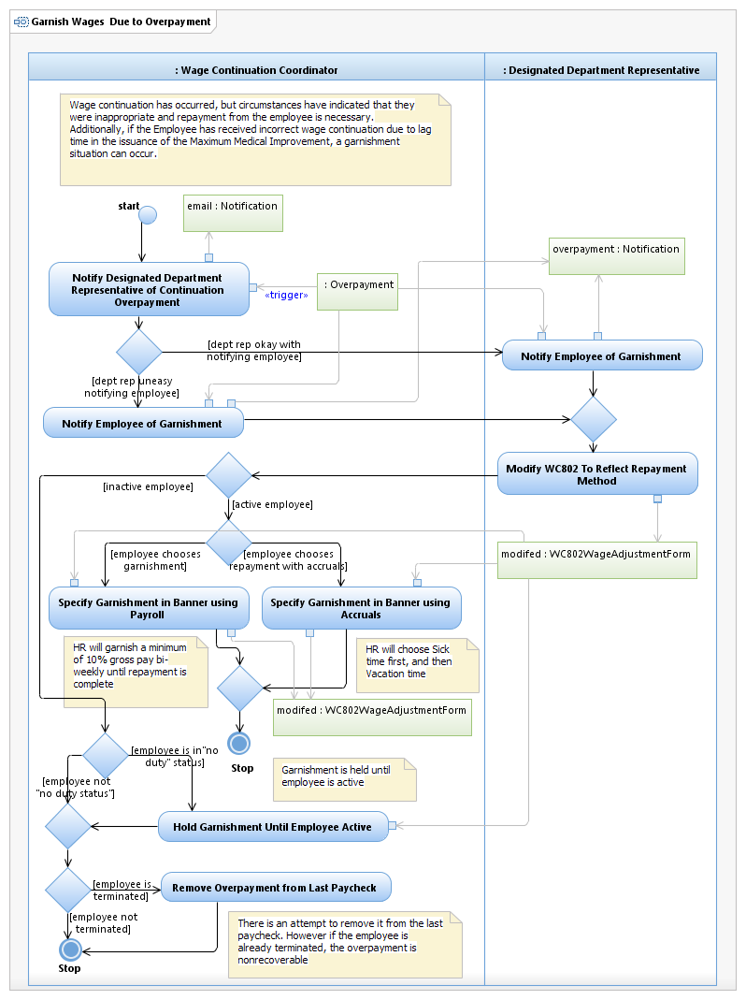

Use Case Model: Garnish Wages Due to Overpayment
Architect: Aaron Brown, IT Enterprise Architect Senior
Date Last Modified: 09/02/2012
User Review: Prieta Aguilar/Leslie Milvo Wage Continuation Coordinator
Date: 11/02/2012
Wage Continuation has occurred, but circumstances have indicated that they were inappropriate and repayment from the employee is necessary. Additionally, if the Employee has received incorrect wage continuation due to lag time in the issuance of the Maximum Medical Improvement, a garnishment situation can occur.
Follow link to Role Definitions

Use Case Model: Garnish Wages Due to Overpayment

Activity Model: Garnish Wages Due to Overpayment